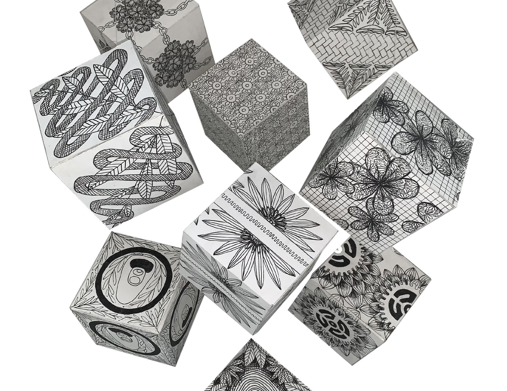
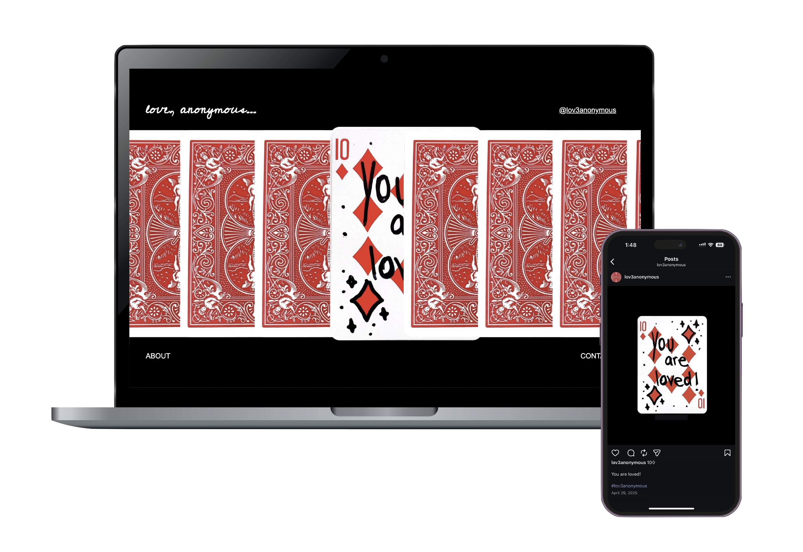

Graphic Designer focused on visual identity, typography, and digital experiences.
I design thoughtful visual systems that transform ideas, culture, and experience into clear, meaningful communication.

Combinature
Visual system and 3D Exploration

Canvas Bellow the Concrete
Editorial and Web design

Wikibook: Brazil
Editorial Design and Typography
Rosh Hashanah
Brand identity and visual system

Lagé: Museum of Collage
Brand identity and visual system: Promotion & Packaging

Love Anonymous
Web Archive Design and Social Media Exploration

The Rhythm of Jazz Lines - Copenhagen Jazz Festival
Brand identity and visual system: Promotion and Packaging

Edward Scissorhands
Web design and Typography